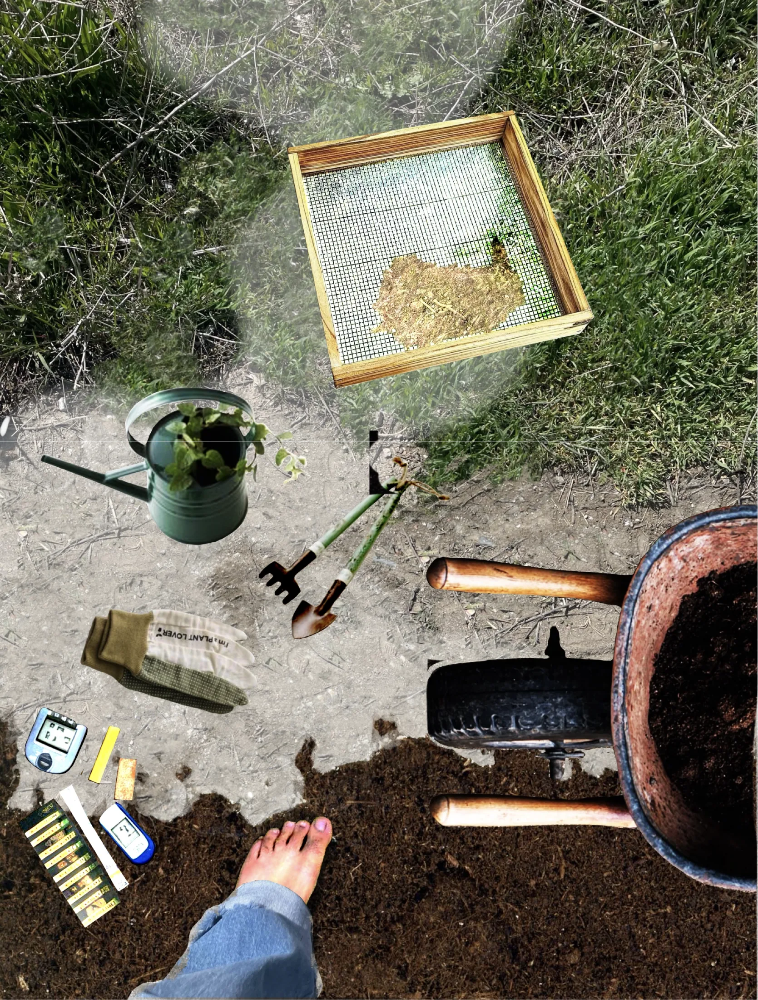
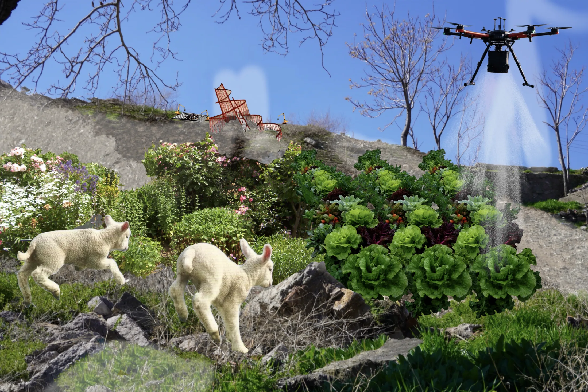
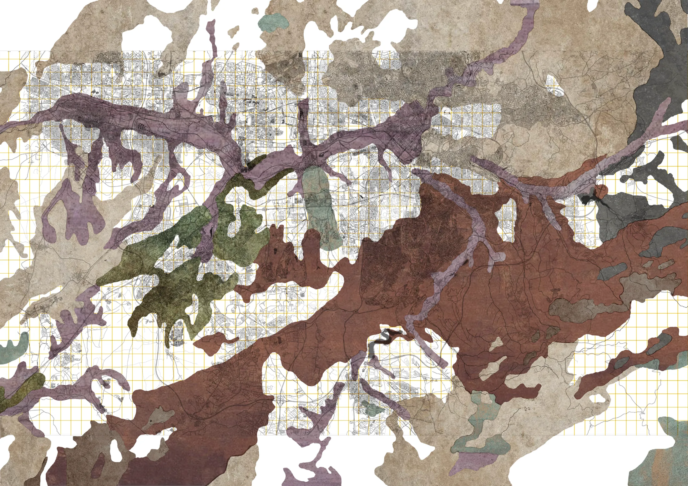
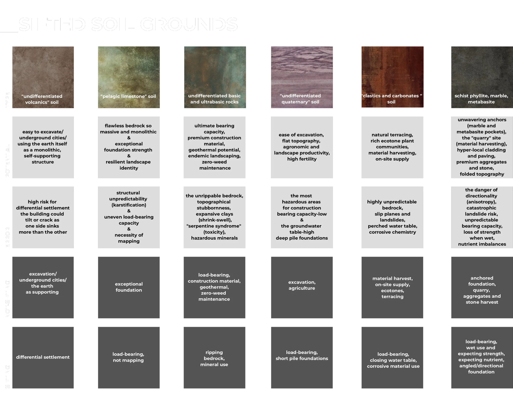
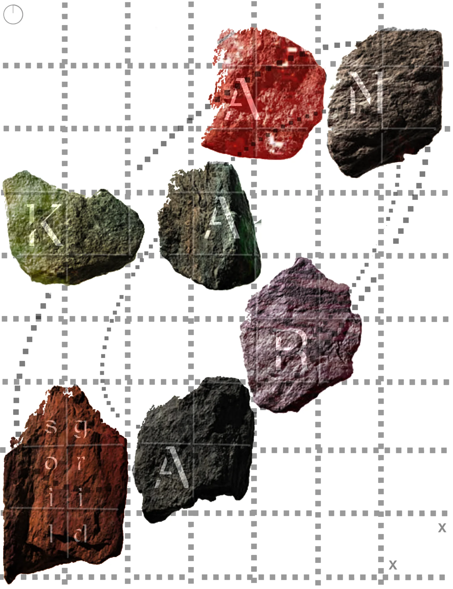

sift verb [T] (EXAMINE)
to make a close examination of all the parts of something in order to find something or to separate what is useful from what is not


"SIFTING ANKARA SOIL" introduces a multi-sensory soil inventory that directly challenges the detached paradigm of modern, top-down urban planning. Traditionally, urbanism operates under an absolute illusion of mastery, treating the living ground as a flat, passive, and inert surface upon which rigid concrete forms are forcefully imposed. This project shifts our perspective away from a distant, abstracted view of the planet toward an entangled, deeply interconnected worldview—Gaia—recognizing the Earth as an active agent that continuously negotiates with and resists human intervention. By analyzing Ankara's deep geological layers, active clay behaviors, and systemic environmental failures, we aim to transform the geological map from a list of technical engineering constraints into a living design compass. And futher, as an interscalar approach and scaleless thinking we aim to transform the hidden scenes which are also parts and signs of these failures. Which are neglected in our everyday lives due to its already consequences with its messy, ugly, misused scenes.
The Metaphor of Sifting
We initiate this critical architectural discourse through the metaphor of "sifting" the earth. We systematically dismantle the geographic abstraction of Ankara, analyzing its diverse soil grounds not as passive topography, but as distinct, active "grounds to sift". By overlaying a conceptual grid across the city, we literally and conceptually "sift" the urban fabric to render hidden geological realities visible. This process dictates how each ground must be cared for based on its unique material agency, reinforcing our transition from the detached "Blue Marble" perspective to the entangled "Gaia" framework.
To ground our methodology, our theoretical framework draws heavily upon Design Earth's Geostories and Bruno Latour's Living with Frankenstein. We challenge "Design Erasure"—the way modern urbanism abstracts the materialities of urban networks and ignores environmental externalities like pollution. Rather than running away from industrial creations, we must accept landfills, mine pits, and oil rigs as legitimate elements of urban design worthy of our care. Furthermore, we reject reducing ecological crises to objective "matters of fact," reclaiming them instead as "matters of concern" that require sensible storytelling and speculative drawing to make the absent visible.



Through this sifting process, we sift the urban substrate into specific soil grounds to determine structural and ecological viability. We evaluate their potential and error to dictate appropriate levels of care.
By running these grounds through diagnostic questions—such as "Care or Not-Care?" and "Internal or External?"—we formulate a framework for how the ground must be internalized and managed.
FROM BLUE MARBLE TO GAIA: ENTERING THE GEOLOGICAL CONTINUUM
For decades, modern architecture has treated the Earth as a "Blue Marble" - a passive, stand-alone resource and an abstract territory to be subdivided by administrative convenience. This entrance invites you to see the ground as "Gaia": an active, composite agent where human infrastructure and non-human materialities are deeply, sometimes violently, entangled. We reject the clean "matters of fact" presented by green technocapitalism. Instead, we expose the messy "matters of concern" that define our landscape, laying bare the contested geographies buried right beneath our feet.